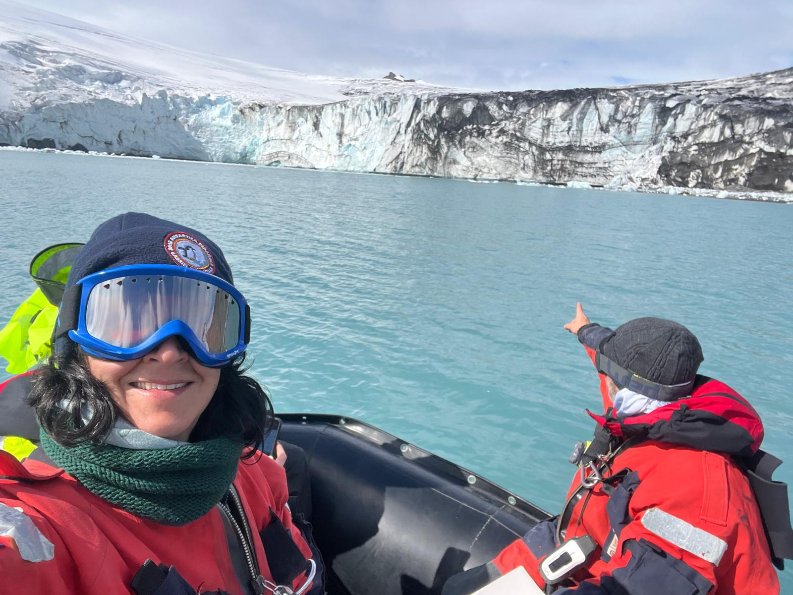
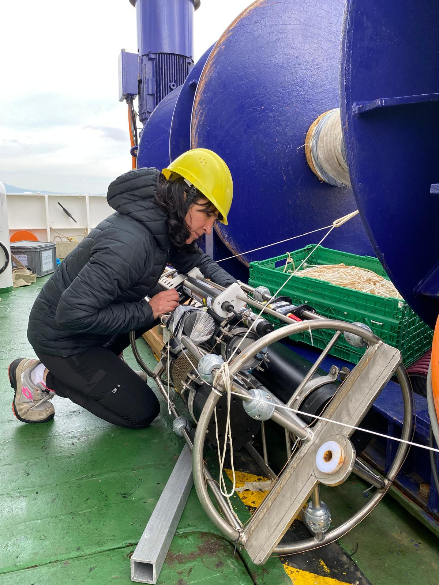
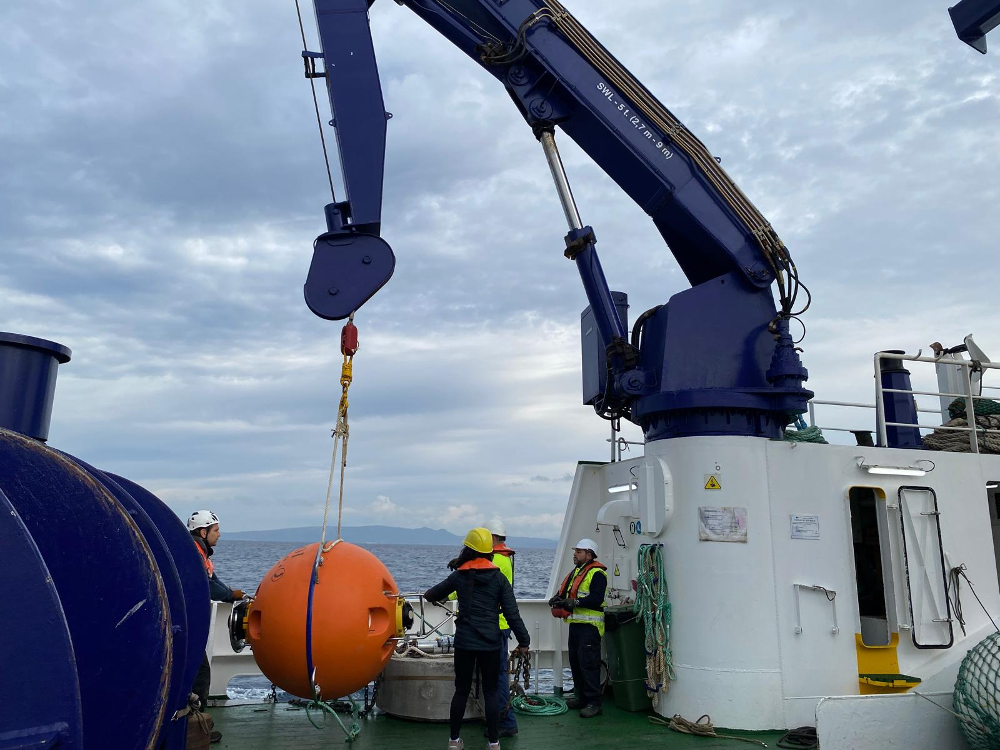
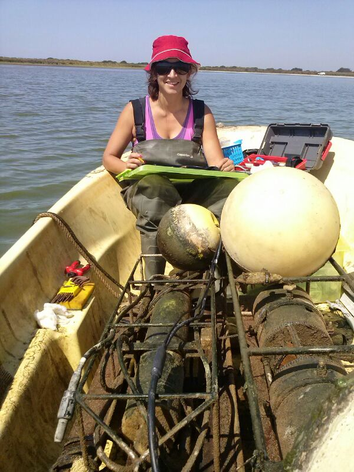

Field Research Gallery
Oceanographic expeditions and research activities
Research Imagery
A visual collection of fieldwork across different marine ecosystems worldwide.
.jpeg)
.jpeg)
.jpeg)

.jpeg)








Research Areas
My field work has covered diverse marine ecosystems:
Mediterranean Sea
- Balearic Islands
- Strait of Gibraltar
- Western basin
- Coastal time series
Atlantic Ocean
- North Atlantic
- Gulf of Cádiz
- Meridional transects
- Water mass exchange
Polar Regions
- Antarctic Peninsula
- Southern Ocean
- Deception Island & Livingston Island
- Cold water biogeochemistry
Expedition Highlights
- 48 oceanographic cruises (278 days at sea)
- >180 field campaigns in diverse environments
- Research in Southern Ocean, Atlantic, Mediterranean, and Baltic Seas
- Locations: Comau Fjord (Chile), Balearic Sea, Guadalquivir estuary, Doñana National Park, Scheldt estuary (Belgium)
Monitoring Programs
Long-term Time Series
Gibraltar Fixed Timeseries (GIFT)
- Coordinated since 2008
- Strait of Gibraltar water mass exchange monitoring
- Carbon system and biogeochemical parameters
Balearic Ocean Acidification Time Series (BOATS)
- Co-founded and co-led since 2018
- High-frequency pH and biogeochemical monitoring
- Ocean acidification assessment in Mediterranean coastal waters
Carbon Observatory Johnson (COJOHNS)
- Coordinated since 2024
- Johnsons Cove (Caleta Johnson), Livingston Island, Antarctica
- High-frequency pH, pCO₂ and environmental monitoring via an autonomous mooring (since February 2024)
- Air–sea CO₂ fluxes in a glacier-fed Antarctic embayment
International Collaborations
Field research in collaboration with:
- University of Washington, Seattle, USA
- Université de Liège, Belgium
- LOCEAN, Paris, France
- JAMSTEC, Japan
- OGS, Trieste, Italy
- Institut National de Recherche Halieutique (INRH), Casablanca, Morocco
All images © Susana Flecha. For use of images for educational or outreach purposes, please contact: susana.flecha@csic.es